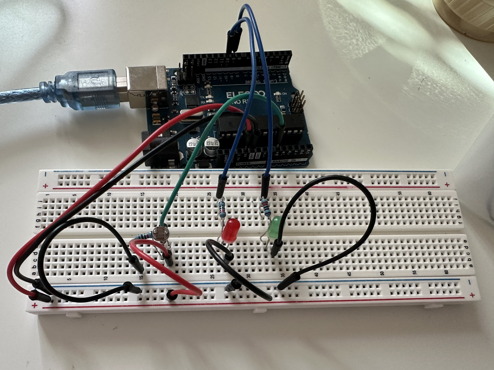

Assignment 3 Input Output!
Calculations
Schematic
In my schematic, the photoresistor (LDR) is placed in a voltage
divider circuit with a fixed resistor. One side of the photoresistor
is connected to the resistor, and the other side is connected to
the analog input pin A0. The resistance of the
photoresistor changes based on the intensity of light.
When it is bright, its resistance decreases, resulting in a lower
voltage at the analog pin, while in darker conditions, its resistance
increases, leading to a higher voltage. This voltage is read by the
Arduino using analogRead(). The red and green LEDs are connected to PWM
pins 9 and 10, each with a 220 ohm’s resistor to prevent
excessive current flow. As the light dims and the resistance of the
photoresistor increases, the Arduino increases the LED brightness
using analogWrite(), making the LEDs brighter when it's dark and
turning them off when the light is bright.
Circuit

This is how I built my circuit. I started by placing
the photoresistor (LDR) on the breadboard then connect
one end of the photoresistor to the power supply on the
breadboard, and the other end to a 10kΩ resistor. Also
connecting the other end of the resistor to ground, with
the other side of the photoresistor and resistor as the
analog input pin (A0) on the Arduino, where the light
intensity will be read. For the LEDs, I added the red
and green LEDs into the breadboard, ensuring the anode
connects to the pins 9 & 10 on the Arduino. Connected
the cathode of each LED to ground through a 220Ω resistor
to protect the LEDs from excess current. Lastly, powered
the Arduino using a USB connection to the laptop.
Circuit Action

Code:
const int redPin = 10; // red LED to pin 10
const int greenPin = 9; // green LED to pin 9
const int analogInPin = A0; // A0 is the input pin for the photoresistor
int sensorValue = 0; // stores the sensor value from the photoresistor
int ledBrightness = 0; // stores the brightness level for both LEDs
void setup() {
pinMode(redPin, OUTPUT); // Set the red LED pin as an output
pinMode(greenPin, OUTPUT); // Set the green LED pin as an output
Serial.begin(9600); // Start serial communication at 9600
}
void loop() {
sensorValue = analogRead(analogInPin); // Read sensor value from the photoresistor
// Prints the sensor value to the Serial Monitor
Serial.print("Sensor input: ");
Serial.println(sensorValue);
// If the sensor value is higher than 600 (bright)
if (sensorValue > 600) {
analogWrite(redPin, 0); // Turn off the red LED
analogWrite(greenPin, 0); // Turn off the green LED
Serial.println("Lights OFF"); // Print a message to the Serial Monitor
} else { // If the sensor value is lower than 600 (dim)
ledBrightness = map(sensorValue, 600, 100, 0, 255); // Map sensor (0 to 255)
ledBrightness = constrain(ledBrightness, 0, 255); // brightness stays within 0-255 range
analogWrite(redPin, ledBrightness); // brightness of the red LED
analogWrite(greenPin, ledBrightness); // brightness of the green LED
// LED brightness to the Serial Monitor
Serial.print("LED Brightness: ");
Serial.println(ledBrightness);
}
Serial.println(""); // blank line
delay(150); // Wait for 150 milliseconds
}
Questions
Question 1: In your voltage divider, can the variable resistor be either R1 or R2
or does it need to be one or the other? Justify your answer with example calculations.
A1:
Technically, the resistor can be R1 or R2 depending on what you want the output(Vout) to be.
If you want Vout to decrease as it gets darker, use R1. If you want Vout to increase as it gets darker, use R2. In my circuit, since the LED turns on when it gets darker, I should use
R2, as it makes it easier to trigger the LED brightness.
Question 2: Draw a graph where the x-axis is time and the y-axis is voltage. Plot the voltage at V-measure of your voltage divider of your shared gif.
A2:
Question 3: AnalogWrite and analogRead are respectively 8-bit and 10-bit values. Imagine you had 10-bit PWM and a 16-bit analog-to-digital converter instead. How would this change your map() code? Explain your answer.
A3: If I had a 10-bit PWM and a 16-bit ADC, their value ranges would be different: the 10-bit PWM would range from 0 to 1023, while the 16-bit ADC would range from 0 to 65535.
To map the ADC values to the PWM range, Id use the map() function to scale the ADC values from 0-65535 to the PWM range of 0-1023. It would look like: map(Value, 0, 65535, 0, 1023)